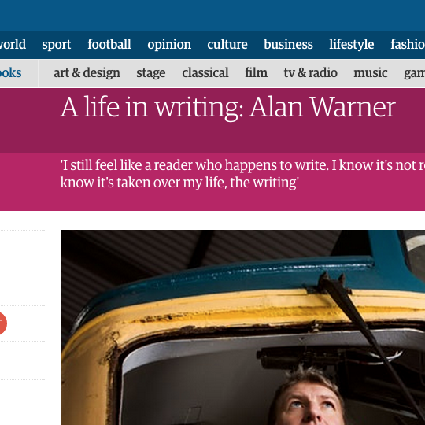
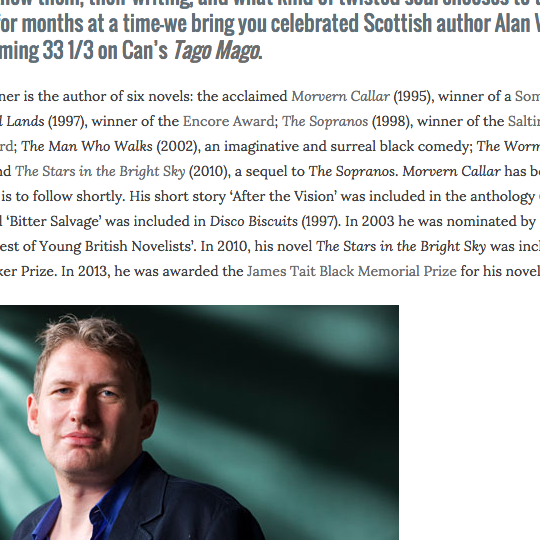
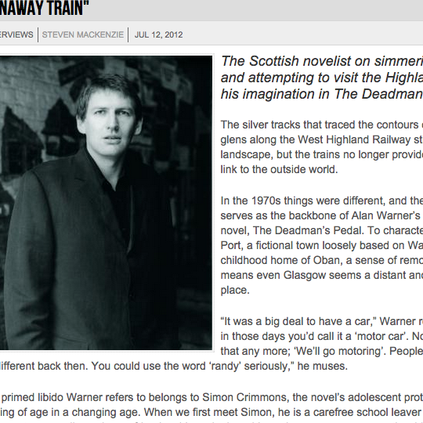
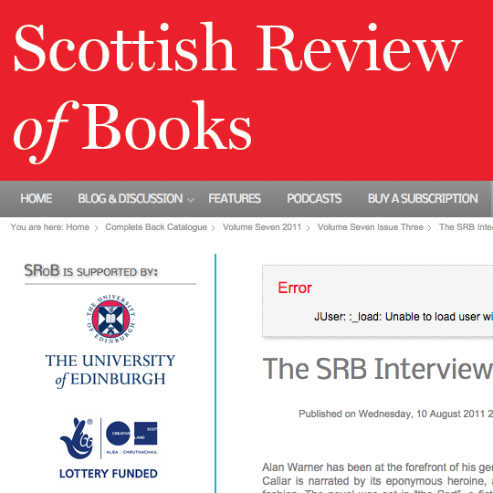
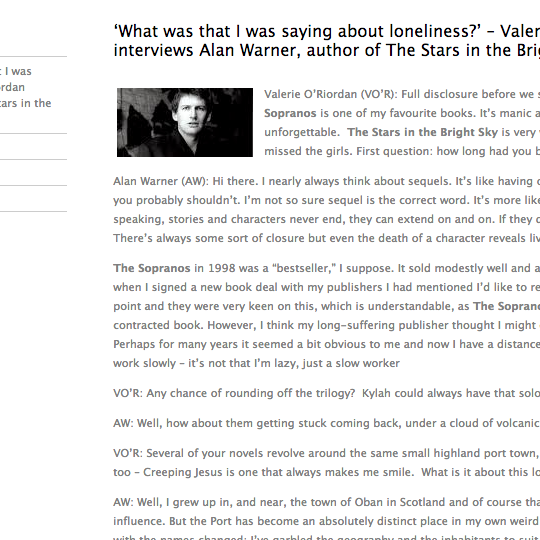
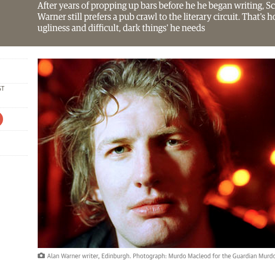
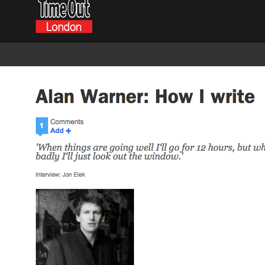
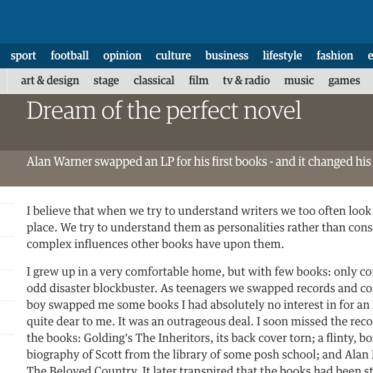

Articles

A LIFE IN WRITING
in Guardian on September 2012

AUTHOR Q&A
in 333Sound on July 2014

THE RUNAWAY TRAIN
in Big Issue on July 2012

THE SRB INTERVIEW
in SRB on August 2011

WHAT WAS THAT I WAS SAYING ABOUT LONELINESS?
in Bookmunch on May 2010

MINE'S A PINT OF HEAVY
in Guardian on April 2006

HOW I WRITE
in TimeOut on May 2006
